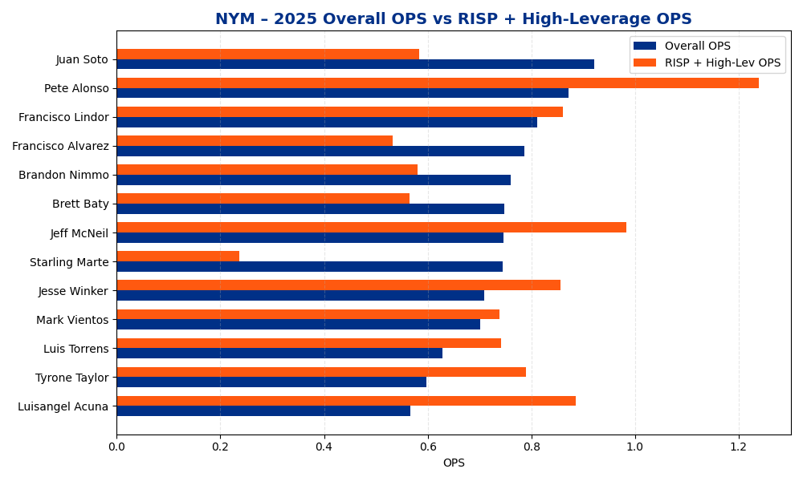
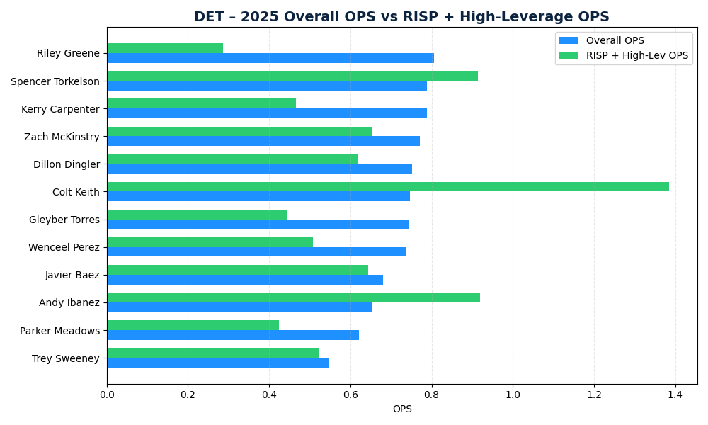
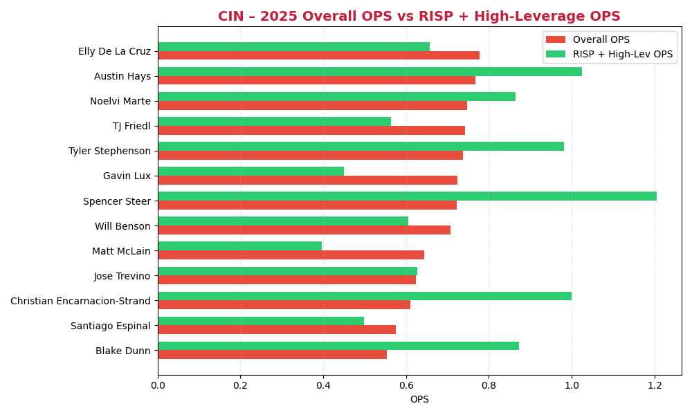
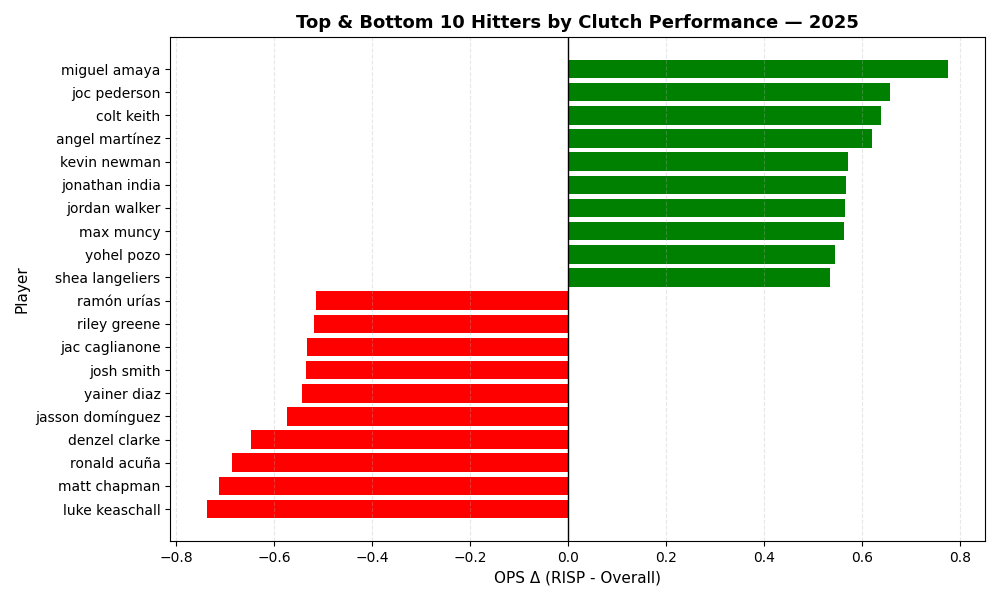

Comparing OPS in runners-in-scoring-position and high-leverage contexts to overall OPS to identify hitters whose performance shifts under pressure.
Scatter plots relating clutch OPS to overall OPS across qualified hitters and selected teams.
Team-level distributions highlighting which clubs exceed or underperform in clutch situations relative to baseline.



Leaders and laggards showing the largest clutch-performance deltas for regression evaluation.

